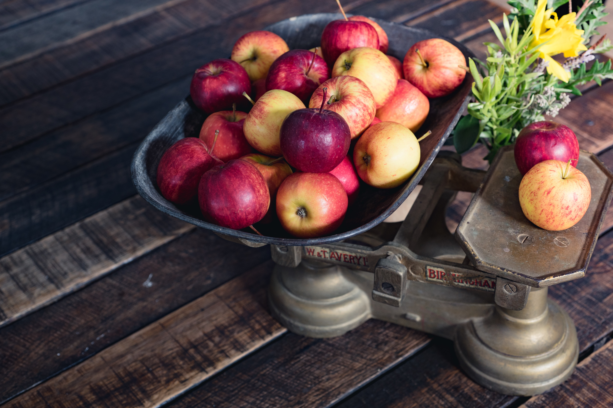

Libra
AIR SIGN
SYMBOL : THE SCALES

Dear Libra,
For me, despite having met both quiet and social Libras, out of the three air signs, you give the friendliest and most approachable vibes at first impression. When I think of Libras, I see the color yellow like the Hogwarts' house 'Hufflepuff' because Libras are kind and fun to spend time with. Being an air sign, they are eloquent with their words of course, and this helps them throughout life from making friends to standing out in work.They love helping people as well, and out of the three air signs, Libras are likely to own their emotions, and share it fearlessly with the world. They are very practical, but like to balance their life. Despite all these great qualities, a Libra can be overly fond of drama, and gossiping can be overly appreciated by them. They can be blunt than honest, which can often lead them to hurt people's feelings. Great examples of Libras include Jeff Goldblum, Cardi B, Jimin from BTS, Ezra Miller and Will Smith.
Zodiac Signs Homepage
Scorpio